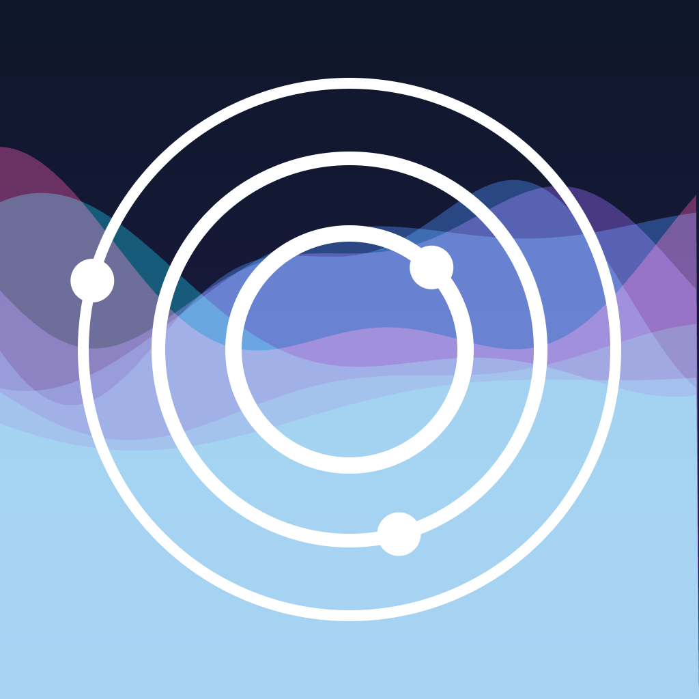
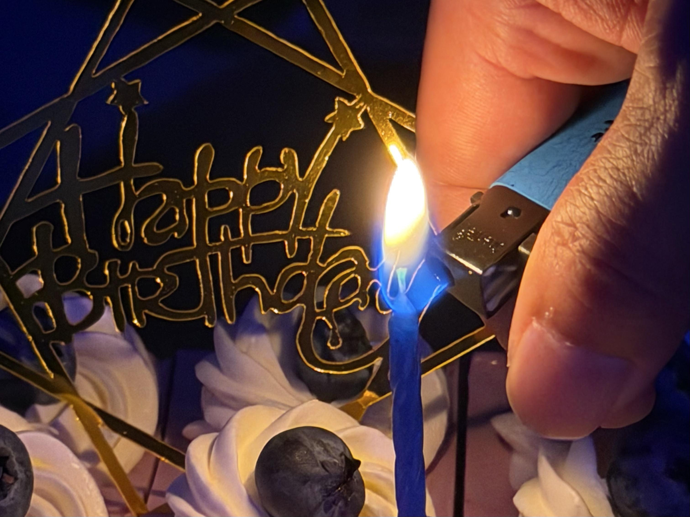

vibe coding 成瘾之后，我正在重建 AI 与生活的边界｜202601-03 月度总结
嗨大家，真是好久不见！ 👋
不知不觉已经 3 个月没有更新我的周报了，这周来填填坑吼～
前段时间的某一天，我回顾了一下我在 X 上发的帖子。这才意识到，我现在的“班味”实在是太重了：“怎么每天发的都是关于工作和 vibe coding 的东西啊？”
再看我之前的 vlog，里面分享了各种生活、阅读的记录和思考，而现在的我写个月度总结都有些大脑空白。
所以，这篇文章，我想跟你们说说，AI 是怎么影响我的生活，以及我的心路历程是怎么样的。当然，除了 AI 之外，生活中也发生了许多有意思的事，让我慢慢与你们分享～
在开始之前，我想强调一下我的观念，免得你们误解了我的意思——
⚠️ 这篇文章并不是在 AI 价值的否定，相反，我非常认可 AI 的巨大意义。
我想跟大家讨论的是，当我们越来越深地使用它时，也应该意识到 AI 可能带来的副作用，避免在这个过程中，慢慢失去我们作为”人”的主体性。
Topic(1/n) - vibe coding 成瘾与那个充满欲望的我
我想很多人可能跟我一样，在过去的几年里，积累了很多想法。但因为信息茧房或者学习门槛太高的缘故，而没能一一去验证、实现这些想法。
AI 的出现就像是给了我一盏阿拉丁神灯，它可以极大地满足我的各种欲望。
于是，在过去的这三个月里，我非常沉迷于 AI 的东西，通过 vibe coding 去开发自己的 APP，去探索自己的能力边界，去体验各种 AI 工具。
你可能纳闷：“这样不是挺好的吗？”
其实，AI 工具本身并没有任何问题，它确实前所未有地降低很多门槛，也抹平了很多信息差。
真正的问题在于，像 vibe coding 这样带有即时闭环的多巴胺奖励机制，本身就很容易让人上头。一旦对 AI 的使用缺乏节制，这种失控感就会被进一步放大。
在这个过程中，我慢慢失去了对选择结构的控制，以至于最后失去了对整个生活的掌控感。
所以第一个话题，我想跟你们聊聊“vibe coding 成瘾”的事情。
我后知后觉地发现，vibe coding 的奖励回路与刷短视频非常相似，都是一套高频、低门槛、强刺激的奖励系统，只不过它的奖励形式不是“被动消费内容”，而是“主动生成结果”。
当你输入一个 prompt，就会立马看到 AI 很快地 thinking、生成代码，甚至返回一个接近成品的 demo，这个过程没有明显阻力，而且每一步都伴随着很强烈的即时反馈。
大脑会天然偏好这种奖励信号，建立“行为与回报”之间的连接，并通过多巴胺系统不断强化这条路径。对于大脑来说，这意味着: 只要继续重复这个动作，就有很大概率再次获得奖励。
久而久之，这种机制会让人变得依赖“即时反馈”本身，而不再只是追求事情本身的意义。
更进一步地，当大脑逐渐适应这种高强度、短周期的刺激之后，它对慢反馈、低刺激、需要长期投入的事情的耐受力也会下降，人会变得很难停下来，难以专注于那些真正重要但无法立刻兑现回报的部分。
你可能会问：“vibe coding 成瘾这么糟糕，你为什么才发现呢？”
因为 vibe coding 会比刷短视频更难觉察和戒断，它直接关联上了我的创造欲、成就感、价值感，极大地满足了我对于自我扩张的想象。
刷短视频的时候，我们起码能意识到自己在“消磨时间”，而 vibe coding 往往披着“创造”、“学习”、“提升效率”的外衣，让我觉得自己正在做正经事、在持续产出。我很难意识到，我其实已经被这种成瘾机制所控制。
我沉迷于此，废寝忘食。
直到有一天，我在收拾书桌，发现我的阅读记录本，已经一个月没有看书了。桌子上的发财树，不知什么时候又长出了新叶。楼下小区的树，不知什么时候开出了粉色的花。

我这才意识到，我其实正在一点点让渡自己作为人的主体性: 不再由我决定注意力该投向哪里、生活该如何展开，而是被欲望、效率和反馈牵着往前走。
这真的很糟糕，不是吗？
Topic(2/n) - “定时记录生活”，这个习惯拯救了我
这三个月高强度的 vibe coding，带给我的不只是成瘾，还有一种更隐蔽的后果: “我的日常记忆开始变得模糊，我常常想不起昨天发生了什么”。
我也是后面才知道，vibe coding 对于大脑的前额叶并不友好。
我们每时每刻都在做大量密集的决策，时间久了之后，大脑就会陷入很严重的“决策疲劳”。这种疲劳带来的，不只是判断力下降，更是感知能力的钝化: 你会变得难以觉察自己的情绪变化，很难感受到生活里的细节。
与此同时，这种状态还会挤掉原本属于日常生活的 offline time。
那些本该用来放空、感受、整理和沉淀的时刻被不断压缩，短期记忆也因此难以被有效巩固。以至于我无法想起昨天发生了什么、上个星期发生了什么。
好在我一直有写日记和写每周手帐的习惯，这些记录极大填补了我对记忆的空缺。

我用周记本记录这周做的事情，用日记来记录我每天的心情和想法。我很多时候是不带有任何目的去写这些记录，更像是一种下意识的保留。
写的时候，我并不觉得这一天有多么特别，甚至常常会觉得自己最近的生活很单调、重复，没有发生什么值得一提的事情。
但后来，当我回头去翻这些日记和手帐的时候，才慢慢发现，真实的生活并不是我当下感受到的那样贫瘠。

原来这段时间里，我还是去了很多好玩的地方、好吃的餐厅，见了很多朋友，发生了很多有意思的事情。
很多当时转瞬即逝的感受，如果没有被记录下来，可能很快就会被我遗忘，最后只在脑海里留下一个模糊的印象: 好像这段时间什么都没发生。
所以，定时记录生活这件事对我来说，最大的意义是让我重新看见生活本身。也正是因为如此，我才意识到，我不能再任由 AI 侵入我的生活。我需要主动停下来，重新划清边界，才能把注意力还给真正重要的部分。
Topic(3/n) - 停下来，重建 AI 与生活的边界
前面说了这么多，我想表达的并不是我对 AI 工具的否定。只是我们需要注意对它的“使用方式”，并对它可能造成的负面影响保持觉察。
我依旧会继续使用 AI，持续 vibe coding，但是我希望自己能更清楚地知道，它应该停在什么地方，我的生活应该从什么地方开始。它是我手里的工具，但不能变成吞掉我生活节奏的东西。
这段时间里，我也开始有意识地给自己设一些更具体的边界。
1️⃣ 首先，重新规划每天的时间。
我会有意识地把一天切分开来，哪些时间留给 vibe coding，哪些时间必须停下来去阅读、写日记，哪些时间要拿来运动、散步、放松。我会主动安排一些让自己慢下来的事情，避免生活节奏被 vibe coding 所打破。
2️⃣ 其次，我对自己 vibe coding 的习惯进行深度复盘和改进，尽量让 vibe coding 的时间变得更聚焦、更高效一些。
比如，尽可能地把工作流沉淀成 skill，花时间做“复利工程”，尽量让一次思考可以在后面反复发挥作用；做任务的拆分和并行，让 AI 在更清晰的结构和分工之下发挥效率。
3️⃣ 最后，也是我觉得最重要的一点，就是要放平心态，“允许自己停下来”。
关掉社交媒体，屏蔽掉那些让人焦虑的噪音。很多时候，人并不是一定要持续输入、持续产出，才算没有浪费时间。
适当地停下来，好好想想自己真正想做什么，会比一味地往前冲更重要。
Topic(4/n) - 优绩主义下的悲剧（读《在轮下》的记录与思考）
一月中的时候，我读完了黑塞的《在轮下》，作为一个东亚小孩，对于这本书的共鸣非常强烈。

书里的悲剧，表面上看，是一个少年在学校、老师、家长和整个环境的层层期待中，一点点被压垮；
但更深一层看，它写的其实是一种更普遍的处境: 当一个人从很早开始，只被允许朝着“优秀”、“有用”、“向上”的方向生长时，他的生命很容易只剩下一条狭窄的轨道。
在这种评价体系里，人的感受是不重要的，“喜不喜欢”也是不重要的，重要的只有成绩、结果、效率、排名。
久而久之，一个人会变得擅长满足外界的标准，却越来越不知道自己真正想要什么。
就像这本书的主角汉斯，他会很早就学会察言观色，学会把自我价值建立在表现和认可之上，学会不断逼迫自己向前；
可与此同时，他也慢慢失去和内在自我相处的能力。那些疲惫、脆弱、犹豫、迷茫，都会被视为某种不应该存在的东西，被忽视、被压抑、被否定。也正是这种对真实自我的不断否认，最终一步步把他推向了悲剧。
这几年我对于“优绩主义”这个话题，有了很多新的感悟。
以前我总以为，离开学校、考试、分数之后，我就能慢慢摆脱优绩主义的那套评判标准。后来才发现，职场其实依旧是一个优绩主义的世界，只不过分数，被换成了 KPI、绩效等等。
更可怕的是，这种评价逻辑并不只存在于学校和职场，它几乎已经被植入了很多东亚人的骨子里。
过年的时候，我回老家，最常听到的调侃就是: “某某以前考上了 985，现在也不知道在干嘛。”
每次听到这种话，我心里都会很不舒服。
因为这句话的背后，其实藏着一套非常根深蒂固的评价逻辑: 一个人的人生，仿佛必须始终沿着一条清晰、体面、不断向上的轨道前进，才算没有辜负过去的努力。一旦后来没有活成大家预设中的样子，他过去所有真实的努力和经历，就好像都不再重要了。
为什么一个人考上了什么大学、进了什么公司、赚了多少钱，就能比他是否过得平静、快乐、充实，更值得被讨论呢？
我其实很期待看到，在 AI 时代下，优绩主义体系的崩盘。
当 AI 抹平了大部分人的智力差之后，或许真正值得被重新看见的，不再是一个人有多符合标准，而是他是否还能保有自己的判断、感受和选择生活的能力。
Topic(5/n) - 一月到三月的生活碎片 🧩
简单地记录一些碎片，按照时间顺序～
1️⃣ 一月去了香港迪士尼，被冰雪奇缘的最后一段失重吓得不行，居然还有抓拍 0.0? 实在是太坏了！
2️⃣ 写的第一个 APP 快发布啦，最近在搞审核。
它是一款基于占星，帮助用户缓解焦虑的 APP，最近我会找时间跟大家说说关于它的故事～

3️⃣ 看完了美剧《同乐者》，如果你喜欢《黑镜》这一类讨论主体性与科技关系的美剧，我强烈推荐这部剧！
它的设定非常有意思: 世界上大多数人被某种“集体意识”同化，变得温和、快乐、没有冲突，但也失去了鲜明的自我；
主角是少数没有被同化的人之一，整部剧围绕一个核心问题: 如果每个人都放下个体意识，换来一个人人和谐的世界，这样的世界真的会更好吗？

4️⃣ 二月 26 号在家过了生日 🎂

5️⃣ 去看了电影《挽救计划》，我很喜欢这部电影，虽然它有些故事逻辑有点牵强，但我真的很喜欢这部电影对男主的塑造，没有硬凹一个被伤害了还要原谅一切、无私奉献的英雄，而是讲一个很 real 的普通人，这一点深得我心。
以及一些宇宙的画面，拍的巨好看，在电影院看很震撼～
写在最后
好多人问我后面还会不会拍 vlog，我想说“会的”，但还需要一些时间。
老观众应该知道，我断更是因为剪 vlog 的工作量实在是太大了，占用了很多时间，后面更新得有点力不从心了。
最近我在研究 AI 结合达芬奇辅助我剪 vlog，想办法让剪辑的工作量减轻一些，这样也有助于后续我持续更新，请你们再等我一会嗷～ 💓
你们放心，所有的文字还是由我自己输出，只是在剪辑方面做一些提效，我给自己定的一条红线就是，“绝对不会在社交平台上发表 AI 生成的观点”，这是我非常严肃的底线。
周报会尽量恢复更新哒！
以上。
期待下次见面！